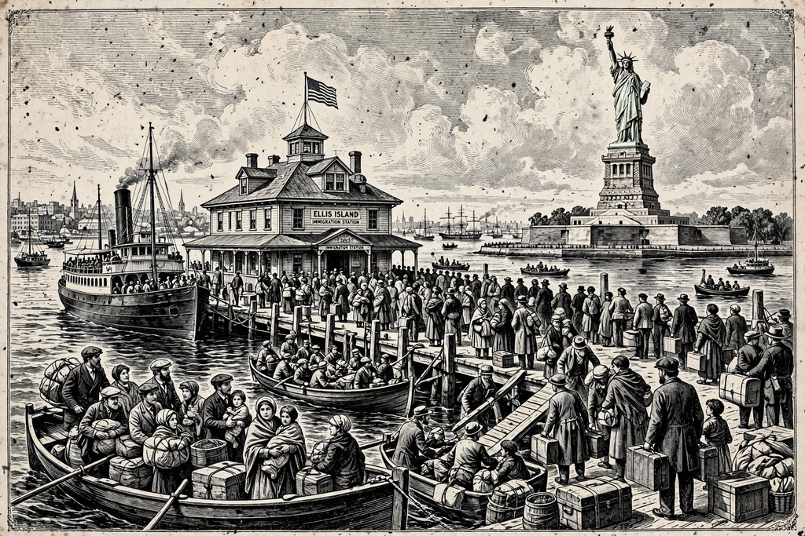

| Melting pot | |
|---|---|
| Concept | A metaphor for a society in which different immigrant cultures blend into a homogeneous whole |
| Popularised by | The Melting Pot (1908), a play by Israel Zangwill |
| Associated with | United States immigration and assimilation |
| Contrasting metaphors | Salad bowl, cultural mosaic, kaleidoscope |

The melting pot is a monocultural metaphor for a heterogeneous society becoming more homogeneous, in which different elements "melt together" into a harmonious whole with a common culture, or vice versa. Historically, it is used to describe the assimilation of immigrants to the United States. The melting pot ideal goes against the concept of multiculturalism and cultural pluralism, in which distinct groups retain their identities — a contrast expressed by the rival metaphors of the "salad bowl" and "cultural mosaic", in which ingredients remain recognisably distinct within the whole.
The image of melting metals into a new alloy was applied to American society as early as the 1780s: J. Hector St. John de Crèvecœur, in his Letters from an American Farmer (1782), wrote of people of all nations being "melted into a new race of men". Ralph Waldo Emerson later used a smelting-pot image in his journals. The metaphor was fixed in the public mind by Israel Zangwill's play The Melting Pot, first performed in Washington, D.C. in 1908 and seen by President Theodore Roosevelt, who reportedly exclaimed, "That's a great play, Mr. Zangwill!" Its hero declares: "America is God's Crucible, the great Melting-Pot where all the races of Europe are melting and re-forming."
The great waves of immigration between the 1880s and the 1920s brought the melting-pot idea into policy and schooling: "Americanisation" programs taught English and civics, and Henry Ford's Ford English School famously graduated immigrant workers in a ceremony in which they entered a giant prop melting pot in their national costumes and emerged in identical suits waving American flags. Sociologists of the Chicago School, and later Milton Gordon, formalised assimilation theory; Gordon's Assimilation in American Life (1964) argued that structural integration, not merely cultural conformity, was the decisive stage. The metaphor always had boundaries, however: for much of American history the "pot" effectively included European groups while excluding or marginalising Black, Asian, and Native Americans, a critique sharpened by the civil rights era.
Philosopher Horace Kallen proposed cultural pluralism as early as 1915, envisioning America as an orchestra in which each ethnic group contributes its own timbre. From the 1970s, multiculturalism scholarship popularised the salad bowl metaphor, in which cultures are tossed together but keep their distinct flavours; Canada officially describes its model as a cultural mosaic. Critics of the melting pot argue it pressures minorities to abandon languages and traditions and treats assimilation as one-way absorption into a dominant (historically Anglo-Protestant) norm, while defenders respond that shared civic culture enables cohesion, and point to high rates of intermarriage and language shift by the third generation as evidence that melting, in some measure, still occurs.
Although most associated with the United States, the metaphor has been applied to other immigration societies and to cities such as New York and London, and has been borrowed for describing cultural fusion in cuisine, music, and language.